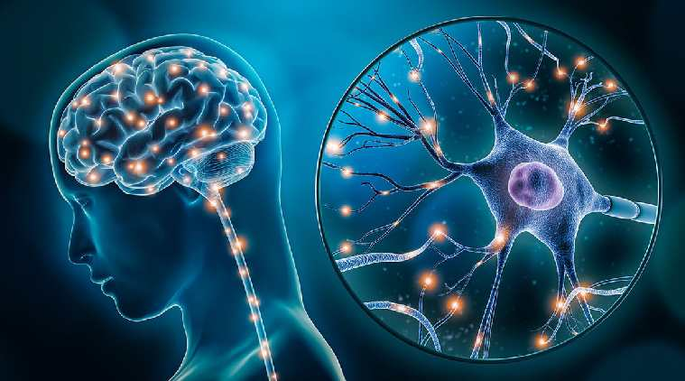

Neuroplasticity & Growth Mindset
The Surprising Truth of Neuroplasticity
Neuroplasticity refers to the capability of your brain to rewire itself to think and function in a variety of new ways. It used to be assumed that the way people's brains operated was hardwired from birth, but we now know this is far from the truth! Understanding that you can rewire your brain to think and operate in new ways can help focus your practice and training to take advantage. As problem-solvers, this is great news for coders! The more we practice and involve ourselves in the act of problem-solving, the more used to the associated ways of thinking our brains will become. We can actually get smarter with practice!
Here are some ways to take advantage and improve using Neuroplasticity:
- Practice - And more practice! Taking advantage of Neuroplasticity involves building neural pathways in your brain. The more you repeat a task, the stronger these pathways become, which makes each repetition easier. Solving problems like JavaScript kata is a great way to do this.
- Context - Research shows that the speed at which you can develop neural pathways is increased significantly if you can provide a mental context - i.e. use the new skill in conjunction with something you already know. Making multiple neural links fire at once strengthens the weaker ones much quicker than just focussing on the new skills alone. Rote memorization's days are over, in other words
- Awareness - Simply knowing that your brain can be trained in this way is empowering, and aids in the development of a growth mindset (more on this below). Understanding how to quickly and efficiently rewire your brain to achieve new things is a fantastic new superpower to have in your arsenal, and you will find yourself instinctively changing your study patterns to benefit.
For a great list of exercises to boost your Neuroplasticity, check out this Atlassian Blogpost. There are some great 'thinking outside the box' options in here, and well as some pro-tips for day-to-day Neuroplasticity-boosting living.
The Importance of a Growth Mindset
Understanding Neuroplasticity goes hand-in hand with the development of a growth mindset. The concept of the 'Growth Mindset' exists in contrast to the 'Fixed Mindset'. Current research shows that a Growth mindset is far superior the the Fixed mindset when it comes to reaching our fullest potential. So what is the difference, and why is it so important? Here are some of the key points on which the two differ:
- Challenges - People with a fixed mindset tend to avoid challenges wherever possible, whereas those with a growth mindest tend to embrace them as an opportunity for improvement.
- Obstacles - People with a fixed mindset tend to give up easily, convincing themselves that they don't have the necessary skills or capabilities to overcome a problem. People with a growth mindset see failure as opportunity for development, and persist in the face of setbacks.
- Effort - Fixed mindset folks avoid effort at all costs, preferring to stick to easier tasks they are more comfortable with. Growth mindset folks see effort as the opportunity to improve their skillset as develop themselves.
- Criticism - Fixies struggle in the face of negative feedback, preferring to ignore it and continue doing their own thing. Growers learn from criticism and take any feedback on board.
- Success - People with a fixed mindset tend to feel threatened by the success of others, while those with a growth mindset are inspired by and learn from it.
How about me?
Personally, I feel like I have qualities of both fixed and growth mindsets. Before I researched this topic, I was certain I had a growth mindset; I'm studying in my 30s, I love learning and am constantly curious... but upon looking at some of the above traits I think I definitely fall into the fixed mindset category for some of them - particularly the last two. While I love being challenged, overcoming obstacles, and putting in effort, I can be pretty full of myself and can definitely struggle with negative feedback. I also do feel like I can be threatened by the success of others - and I don't know why!! Needless to say, I'll make a conscious effort to improve upon these points as my DevAcademy journey continues. I think an important part of self-reflection has to be to continuously assess your actions and choices and see which mindset they tend to side with. The "Growth vs Fixed Mindset" article at mindsethealth.com goes into a lot more detail on this topic and is a great read.
How can this help me?
I'm going to try and work in my new-found knowledge of Neuroplasticity and Growth Mindset to my Learning Plan goals as follows:
- Negativity - When things aren't going well I tend to have a 'the world is against me' approach. I need to consciously reassess this way of thinking whenever it occurs and remind myself that I can get myself out of any situation with the right mindset.
- Working with others - I need to be receptive to criticism and feedback from others, and take those things on board when producing future work. I also need to acknowledge and praise the success of others around me, and try to learn and grow from their efforts.
- Time Management - I've been telling myself the last few weeks that I'm just not someone who is good at time management. Turns out this is just an excuse, and there's no reason I can't improve my time management skills with a little Neuroplasticity management!
- Perfectionism - The reason perfectionists are perfectionists is fear of failure, which is definitely something I suffer from. I'm going to try and put myself out there regardless of the potential for failure, as this is really just an opportunity to grow.